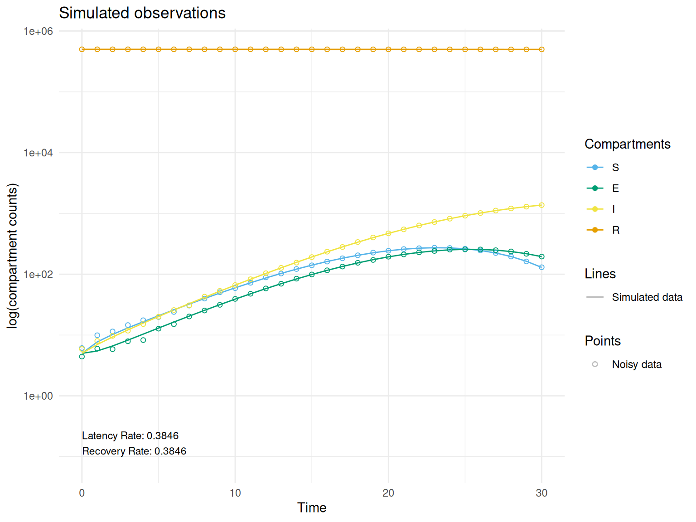
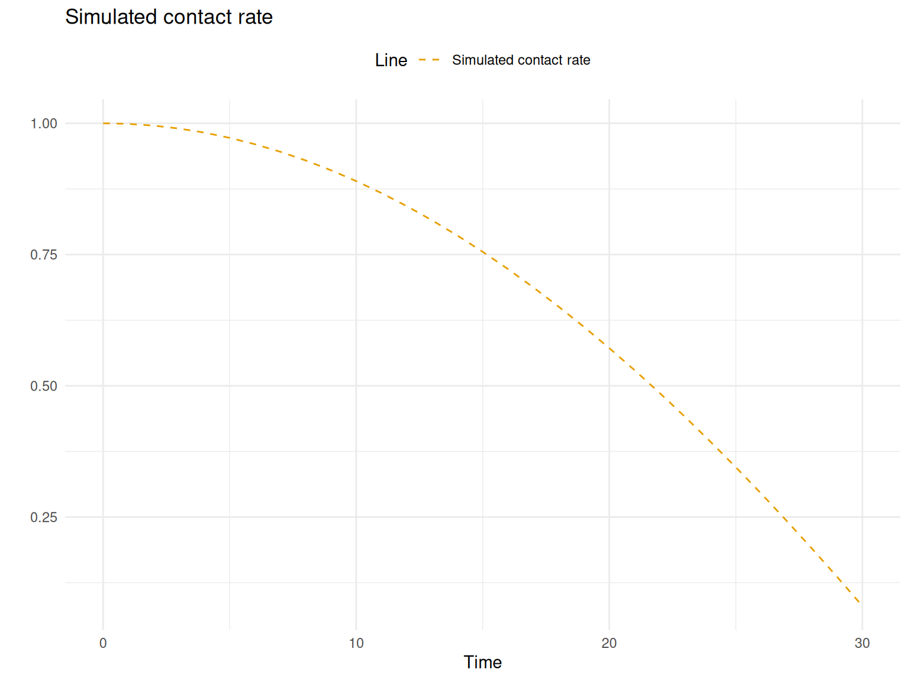
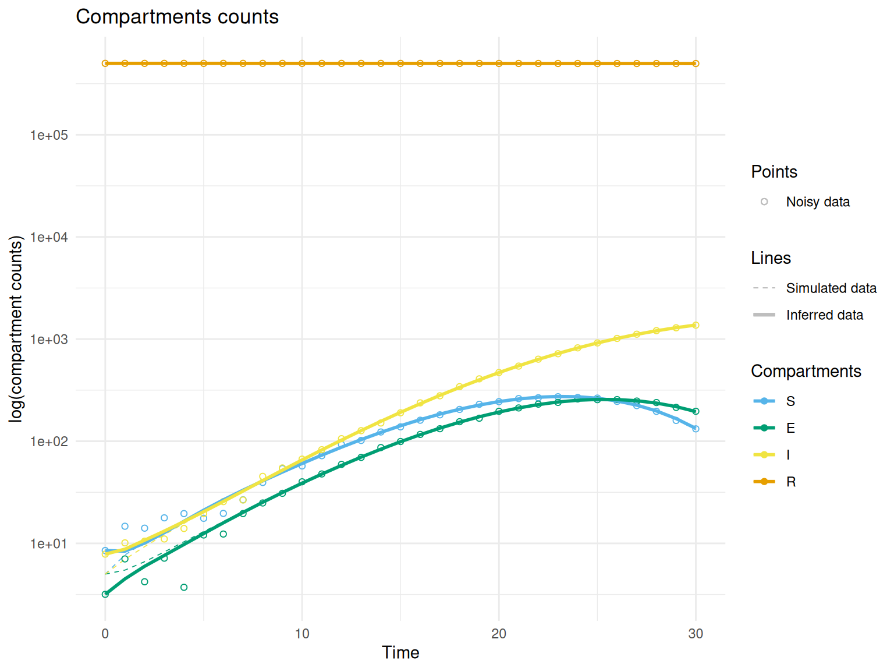
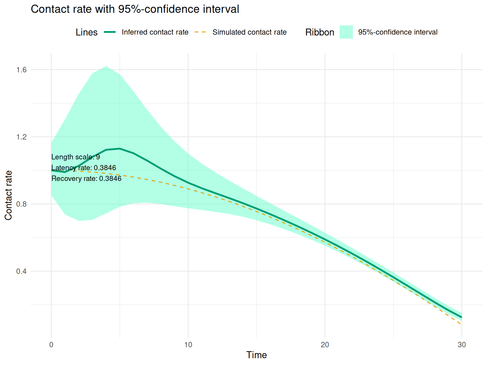
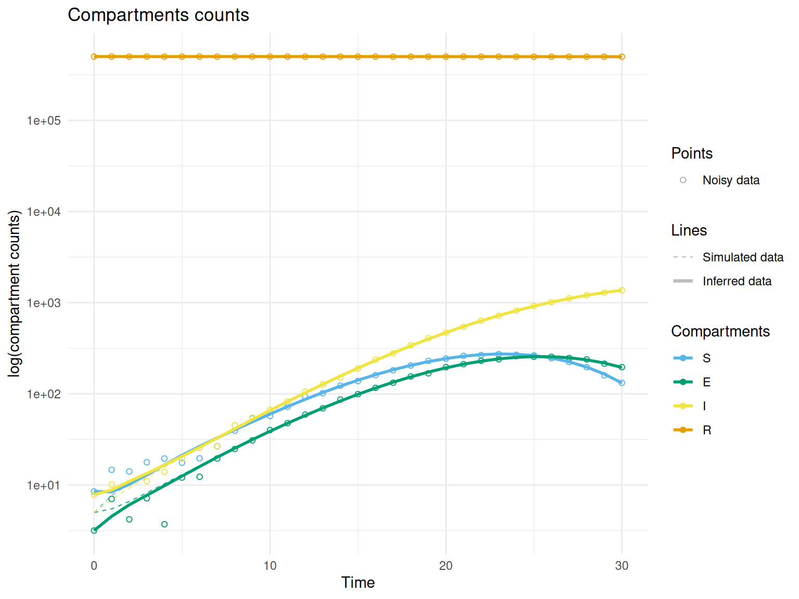
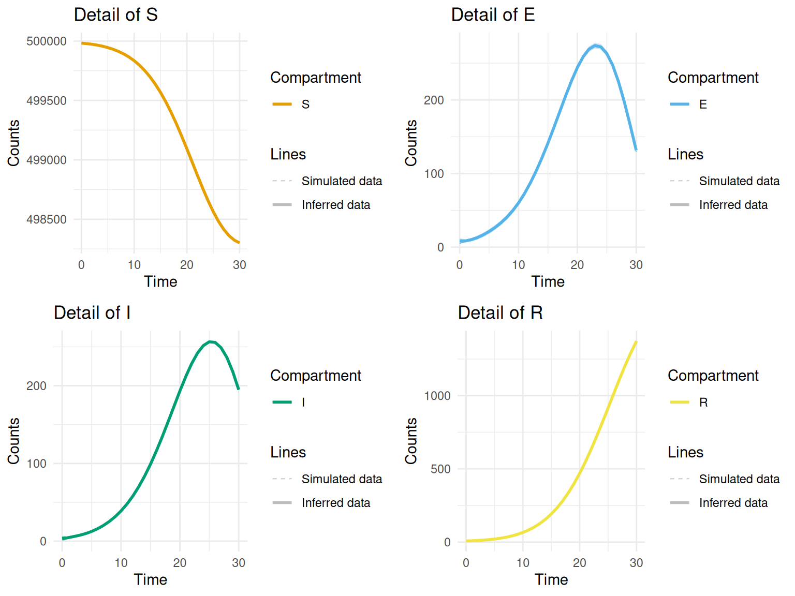
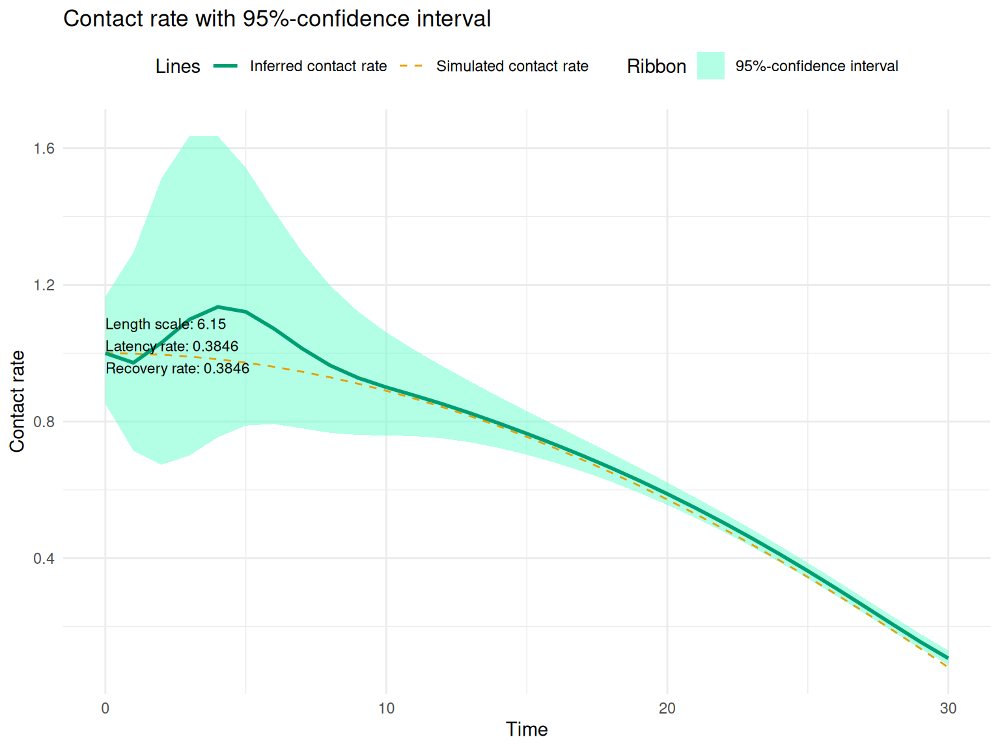
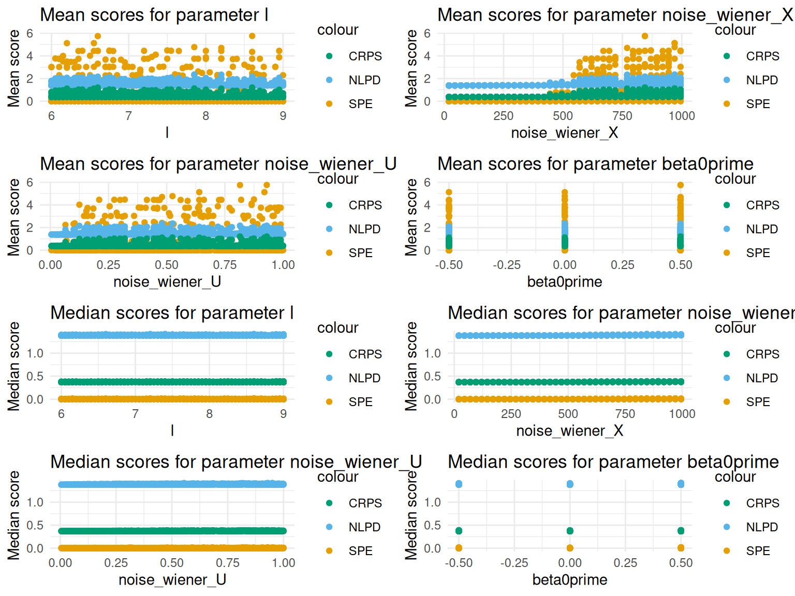

# --------------
# Initialization
# --------------
model <- 'SEIR' # model to be simulated ('SEIRD' or 'SEIR' available)
steps <- 1 # steps for time grid
max_time <- 30 # max time for time grid
lambda <- 1/(2.6) # latency rate, ref value 1/(2.6)
gamma <- 1/(2.6) # recovery rate, ref value 1/(2.6)
if (model == 'SEIRD') {
eta <- 0.024*(1/15) # fatality rate, ref value 0.024*(1/15)
} else if (model == 'SEIR') {
eta <- 0
}
beta <- function(t){2*cos(t/30)-1} # funtion for contact rate
# Starting compartment counts
if (model == 'SEIRD') {
xstart <- c(S = 499980, E = 5, I = 5, R = 5, D = 0)
} else if (model == 'SEIR') {
xstart <- c(S = 499985, E = 5, I = 5, R = 5)
}
pop <- sum(xstart)
noise <- 10 # noise to add on the data, set > 0 to avoid numerical instabilities
seed <- 5 # any integer, for reproducibility (set NA for no seed)
# ------------------------
# Simulation of a data set
# ------------------------
# Data simulation
sim <- simulate_data_LSODA(
model = model,
noise = noise,
seed = seed,
steps = steps,
max_time = max_time,
lambda = lambda, gamma = gamma, eta = eta,
pop = pop,
beta = beta,
xstart = xstart)
# Get simulated data sets
obs <- sim$obs
df_beta <- sim$df_beta
if (noise > 0) {
obs_with_noise <- sim$obs_with_noise
}
# Visualization
plots <- plotting_simulated_data_lsoda(
model = model,
sim = sim,
latency_rate = lambda,
recovery_rate = gamma,
fatality_rate = eta,
log = TRUE)
(simulated_compartments <- plots$simulated_compartments)
(simulated_beta <- plots$simulated_beta)
l <- 9 # lengthscale
noise_wiener_X <- 50 # noise of the Wiener process associated with X
noise_wiener_U <- 0.01 # noise of the Wiener process associated with U
beta0 = df_beta$beta[1] # starting contact rate
beta0prime <- 0 # starting 1st derivative of contact rate
obs_to_use <- obs_with_noise # choose if obs or obs_with_noise
# Initialize
initial_params <-
initialization(model = model, obs = obs_to_use,
beta0 = beta0, beta0prime = beta0prime,
lambda = lambda, gamma = gamma, eta = eta,
l = l, scale = 1, noise_obs = noise,
noise_X = sqrt(noise), noise_U = 0.01,
noise_wiener_X = noise_wiener_X,
noise_wiener_U = noise_wiener_U,
pop = pop)
# Generate time grids for inference
grids <- generate_grid(obs, num_points_between = 0)
# Run inference
inference_results <- inference(model = model,
grids = grids,
obs = obs,
jit = TRUE,
initial_params = initial_params)
# Process data for scoring and visualization
processed_data <- process_data(inference_results,grids)
U_plot <- processed_data$U_plot
X_plot <- processed_data$X_plot
# Compute and display scores
(styled_table <-
compute_scores_and_table(U_plot = U_plot, df_beta = df_beta))| Method | Value |
|---|---|
| Mean Squared Prediction Error | 0.0034514 |
| Mean Negative Log Predictive Density | 1.3815411 |
| Mean Continuous Ranked Probability Score | 0.3717699 |
# Plot compartment counts inferred from simulated data
(compartments <-
plot_compartments(model = model,
obs = obs,
obs_with_noise = obs_with_noise, # if available, otherwise set NULL
X_plot = X_plot))
# Plot compartment counts separately
plots_sep <-
plot_compartments_separately(
model = model,
obs = obs,
obs_with_noise = NULL, # if available, otherwise set NULL
X_plot = X_plot)
num_plots <- length(plots_sep)
invisible(grid_plots_sep <- grid.arrange(
grobs = plots_sep,
ncol = 2,
nrow = ceiling(num_plots/2)))# Plot contact rate with 95% confidence interval
(contact_rate_with_CI <- plot_contact_rate_with_CI(U_plot = U_plot,
df_beta = df_beta, # if available, otherwise set NULL
latency_rate = lambda,
recovery_rate = gamma,
fatality_rate = eta,
lengthscale = l))
Same data set as simulation A, parameters given by random search.
l <- 6.15 # lengthscale
noise_wiener_X <- 20 # noise of the Wiener process associated with X
noise_wiener_U <- 0.055 # noise of the Wiener process associated with U
beta0 = df_beta$beta[1] # starting contact rate
beta0prime <- 0 # starting 1st derivative of contact rate
obs_to_use <- obs_with_noise # choose if obs or obs_with_noise
# Initialize
initial_params <-
initialization(model = model, obs = obs_to_use,
beta0 = beta0, beta0prime = beta0prime,
lambda = lambda, gamma = gamma, eta = eta,
l = l, scale = 1, noise_obs = noise,
noise_X = sqrt(noise), noise_U = 0.01,
noise_wiener_X = noise_wiener_X,
noise_wiener_U = noise_wiener_U,
pop = pop)
# Generate time grids for inference
grids <- generate_grid(obs, num_points_between = 0)
# Run inference
inference_results <- inference(model = model,
grids = grids,
obs = obs,
jit = TRUE,
initial_params = initial_params)
# Process data for scoring and visualization
processed_data <- process_data(inference_results,grids)
U_plot <- processed_data$U_plot
X_plot <- processed_data$X_plot
# Compute and display scores
(styled_table <-
compute_scores_and_table(U_plot = U_plot, df_beta = df_beta))| Method | Value |
|---|---|
| Mean Squared Prediction Error | 0.0026770 |
| Mean Negative Log Predictive Density | 1.3813789 |
| Mean Continuous Ranked Probability Score | 0.3715729 |
# Plot compartment counts inferred from simulated data
(compartments <-
plot_compartments(model = model,
obs = obs,
obs_with_noise = obs_with_noise, # if available, otherwise set NULL
X_plot = X_plot))
# Plot compartment counts separately
plots_sep <- plot_compartments_separately(model = model,
obs = obs,
obs_with_noise = NULL, # if available, otherwise set NULL
X_plot = X_plot)
num_plots <- length(plots_sep)
invisible(grid_plots_sep <- grid.arrange(
grobs = plots_sep,
ncol = 2,
nrow = ceiling(num_plots/2)))
# Plot contact rate with 95% confidence interval
(contact_rate_with_CI <- plot_contact_rate_with_CI(U_plot = U_plot,
df_beta = df_beta, # if available, otherwise set NULL
latency_rate = lambda,
recovery_rate = gamma,
fatality_rate = eta,
lengthscale = l))
More days
# If wished, a random search on a set of parameters can be performed
if (TRUE) { # set TRUE to perform random search
seed <- 5
num_param_sets <- 1000 # Number of parameter sets to sample.
seq_l <- seq(6, 9, by = 0.05)
seq_wiener_X <- seq(20, 1000, by = 25)
seq_wiener_U <- seq(0.005, 1, by = 0.005)
seq_beta0prime <- c(-0.5, 0, 0.5)
results_summary <-
run_random_search(
model = model, obs_to_use = obs_to_use, df_beta = df_beta,
noise = noise, lambda = lambda, gamma = gamma, eta = eta, pop = pop,
beta0 = beta0, jit = TRUE,
seed = seed, num_param_sets = num_param_sets,
seq_l = seq_l,
seq_wiener_X = seq_wiener_X,
seq_wiener_U = seq_wiener_U,
seq_beta0prime = seq_beta0prime
)
plots_scores <- plot_scores(results_summary)
all_plots <- c(plots_scores$mean_plots, plots_scores$median_plots)
invisible(grid_of_plots <- grid.arrange(
grobs = all_plots,
ncol = 2,
nrow = 4))
# If desired, save the plot using ggsave
# output_dir <- '~/Documents/GitHub/proboder/Results/2024-07-05_16-30-05-sim-A/'
# ggsave(filename = file.path(output_dir, 'grid_search.png'),
# plot = grid_of_plots,
# bg = "white",
# width = 8,
# height = 6)
(best_params <- find_best_hyperparameters(results_summary))
}## Duration of the whole workflow: 66.268 sec elapsed## Warning: `aes_string()` was deprecated in ggplot2 3.0.0.
## ℹ Please use tidy evaluation idioms with `aes()`.
## ℹ See also `vignette("ggplot2-in-packages")` for more information.
## This warning is displayed once every 8 hours.
## Call `lifecycle::last_lifecycle_warnings()` to see where this warning was
## generated.
## l noise_wiener_X noise_wiener_U beta0prime mean_SPE median_SPE
## 1 6.15 20 0.055 0 0.002743671 0.000535473
## mean_NLPD median_NLPD mean_CRPS median_CRPS
## 1 1.381332 1.378062 0.3715678 0.3699697# If wished, the processed data can be stored
directory_save <- '~/Documents/GitHub/proboder/Results/'
if (FALSE) { # Set TRUE to save
save_processed_data(inference_results = inference_results,
processed_data = processed_data,
directory = directory_save,
simulated_compartments = simulated_compartments,
simulated_beta = simulated_beta,
compartments = compartments,
contact_rate_with_CI = contact_rate_with_CI,
grid_plots_sep = grid_plots_sep,
styled_table = styled_table)
}
# To store the table as a png file, use the manual export option from the viewer.
# Save in size 400x200.